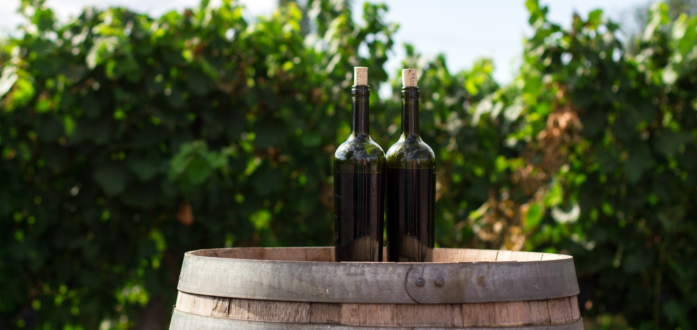
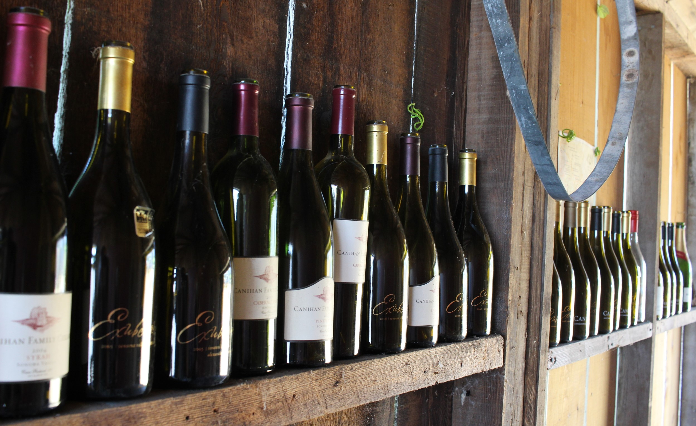
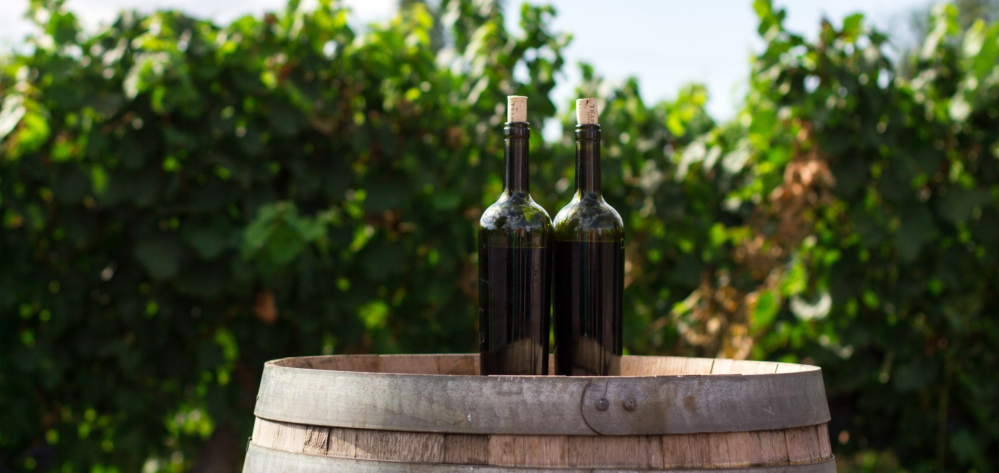
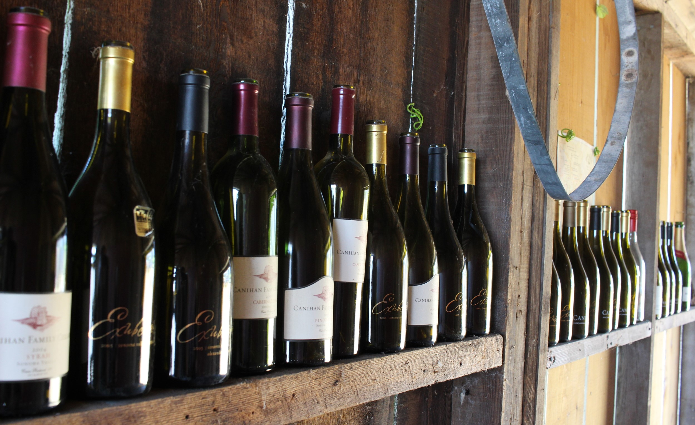

Degustar um vinho, na maioria das vezes, sempre esteve associado a uma prática
restrita à alta elite social e a indivíduos com uma situação econômica privilegiada.
No entanto, através deste artigo, estamos com o intuito de desmitificar e democratizar
essa prática enológica fascinante.
Acreditamos que a degustação de vinhos deve ser acessível a todos, independentemente
de sua origem social ou nível de conhecimento prévio sobre a bebida. O objetivo principal é desfazer a ideia
de que a degustação...
Desvende os Mistérios dos Vinhos: Da Vinha Ate Taça
Quer entender como o terroir, a vinificação e o envelhecimento influenciam a qualidade e o
caráter de um vinho? Em nosso artigo completo, você encontrará informações detalhadas
sobre o fascinante processo de produção do vinho, desde o cultivo das uvas até o momento
em que a bebida chega à sua taça. Conheça as diferentes técnicas de vinificação, explore
as características das principais regiões vinícolas e descubra como os fatores ambientais
podem impactar o sabor final. Desvende os segredos por trás...
Os Benefícios Surpreendentes do Vinho para a Nossa Saúde
O consumo moderado de vinho tem sido associado a uma série de benefícios para a saúde.
Estudos mostraram que o vinho tinto, em particular, contém antioxidantes, como o resveratrol,
que podem ajudar a reduzir o risco de doenças cardíacas. Além disso, o vinho pode aumentar o
colesterol bom (HDL) e diminuir o colesterol ruim (LDL), melhorando a saúde cardiovascular.
Outros benefícios incluem a redução do risco de derrame, a melhoria da saúde cerebral e a prevenção
de certos tipos de câncer...
Os Diferentes Tipos de Vinho e Suas Características
O mundo dos vinhos é vasto e diversificado, com uma ampla variedade de estilos e sabores
para explorar. Os principais tipos de vinho são o vinho tinto, o vinho branco, o vinho rosé e o
vinho espumante. O vinho tinto é geralmente mais encorpado, rico em taninos e apresenta sabores mais complexos,
que variam de acordo com as uvas utilizadas e o processo de envelhecimento. Já o vinho branco é mais leve e refrescante,
com aromas frutados e acidez equilibrada. O vinho rosé é feito a partir...
Dicas para Armazenar e Servir Vinhos Adequadamente
O armazenamento e o serviço adequados do vinho podem fazer toda a diferença na qualidade e no prazer da
experiência de degustação. Para armazenar vinho a longo prazo, é essencial mantê-lo em uma adega ou em local fresco,
escuro e livre de vibrações. A temperatura ideal varia de acordo com o tipo de vinho, mas geralmente fica entre 12°C e 18°C.
O vinho também deve ser armazenado deitado, para que o líquido esteja em contato com a rolha, mantendo-a úmida e impedindo
a entrada de ar. Ao servir o vinho, é recomendado...
Os Principais Países Produtores de Vinho no Mundo
O vinho é produzido em várias regiões ao redor do mundo, mas alguns países se destacam como principais produtores.
A Itália é um dos maiores produtores de vinho, com uma longa tradição vitivinícola e uma ampla variedade de uvas cultivadas.
França também é conhecida por sua excelência na produção de vinho, com regiões como Bordeaux, Borgonha e Champagne sendo famosas
por seus rótulos renomados. Espanha é outro país que se destaca na produção vinícola, com regiões como Rioja e Ribera del Duero ganhando...
A Arte do Vinho e Comida: Harmonização Perfeita
A harmonização entre vinho e comida é uma arte que busca combinar os sabores e aromas dos pratos com as características dos vinhos,
proporcionando uma experiência gastronômica completa. Existem algumas diretrizes básicas para harmonizar vinho e comida. Por exemplo,
vinhos brancos leves e frescos combinam bem com frutos do mar e saladas, enquanto vinhos tintos mais encorpados harmonizam com carnes
vermelhas e queijos intensos. No entanto, as harmonizações não se limitam a essas regras, e a experimentação...
Os Diferentes Tipos de Vinho e Suas Características
O mundo dos vinhos é vasto e diversificado, com uma ampla variedade de estilos e sabores
para explorar. Os principais tipos de vinho são o vinho tinto, o vinho branco, o vinho rosé e o
vinho espumante. O vinho tinto é geralmente mais encorpado, rico em taninos e apresenta sabores mais complexos,
que variam de acordo com as uvas utilizadas e o processo de envelhecimento. Já o vinho branco é mais leve e refrescante,
com aromas frutados e acidez equilibrada. O vinho rosé é feito a partir...


 


